L'application des professionnels du bar
Tout le savoir du bar, dans votre poche.
Les 36 cocktails de référence, vos fiches techniques chiffrées en direct, et toute la culture bar à réviser en quiz — service après service.
Bientôt disponible sur iOS et Android · Téléphones et tablettes
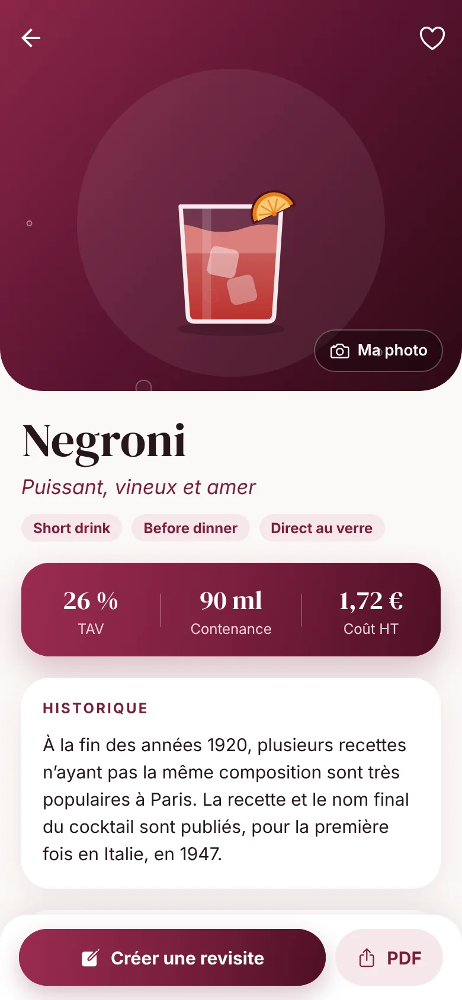
Une application, trois réflexes
Consulter. Créer. Se cultiver.
Le socle
Les 36 cocktails du Socle des cocktails de référence : recette en ml, historique, technique, variantes.
Voir une fiche →Vos fiches techniques
Créez vos fiches de zéro ou en revisite d'un classique. TAV, coût matière et prix de vente se calculent tout seuls.
Voir l'éditeur →Culture & quiz
Produits, histoire du bar, matériel, lexique : tout l'univers du métier, puis des quiz pour l'ancrer.
Essayer un quiz →01 — Le socle
36 classiques, une seule référence.
Un doute sur un dosage en plein service ? Chaque cocktail du référentiel officiel a sa fiche complète, dessinée avec son verre et sa garniture exacte.
- Recette en ml, historique, verre, glace, garniture et variantes
- Technique pas à pas, avec un tutoriel animé de la méthode
- Quantités recalculées pour 4, 10 ou 20 verres
- Recherche, filtres par base et par méthode, favoris
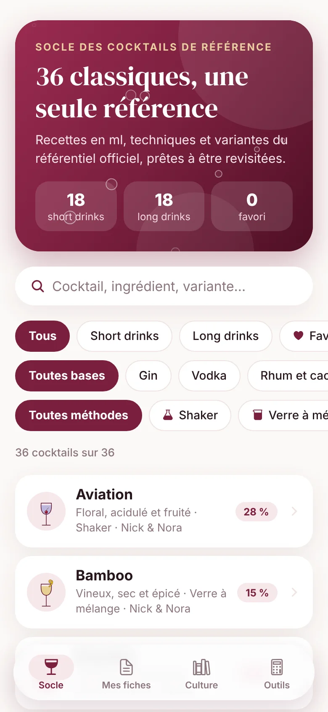
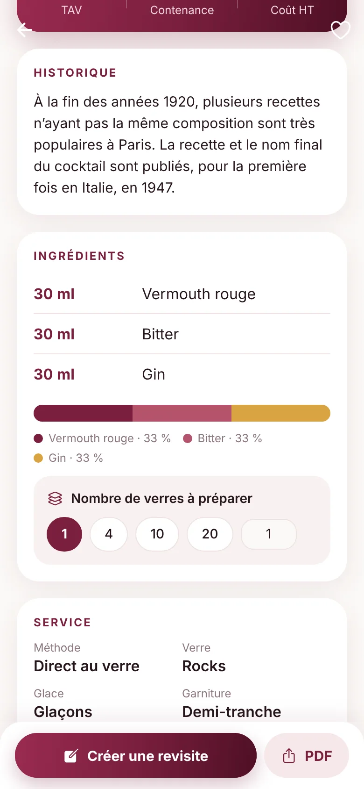
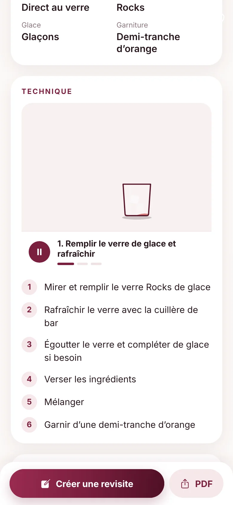
02 — Vos fiches techniques
Vos créations, chiffrées en direct.
Partez de zéro ou touchez « Créer une revisite » sur un classique : la recette, la technique et les coûts sont repris, il ne reste qu'à adapter. Pendant que vous saisissez, Knowtail fait les comptes.
- TAV, grammes d'alcool pur, coût matière et prix de vente calculés
- Allergènes repérés d'après les ingrédients
- Votre propre photo sur chaque fiche
- Export PDF de la fiche et de la carte du bar
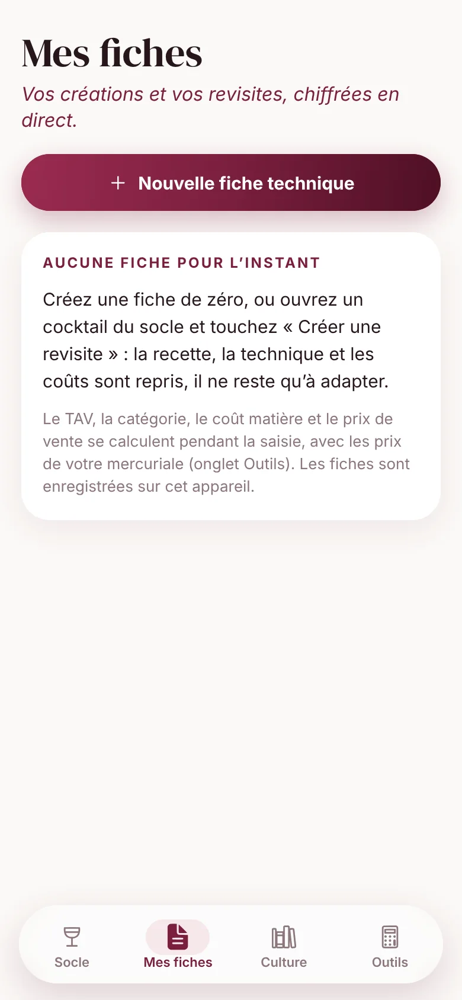
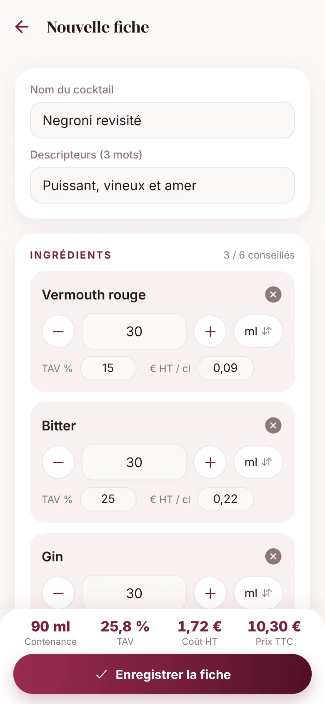
03 — Culture & quiz
Le savoir fait le barman.
Spiritueux, liqueurs, vins, saké, agrumes ; deux siècles d'histoire du cocktail ; chaque outil et chaque verre. Knowtail vous fait explorer le métier, puis vous met à l'épreuve : choisissez le thème et le nombre de questions.
- 22 fiches produits : frise de dates, élaboration, arômes, service
- Culture bar : grandes époques, figures, bars mythiques, livres
- 21 outils et 20 verres illustrés, avec usage et conseils
- Quiz tirés au hasard : aucune série ne se ressemble
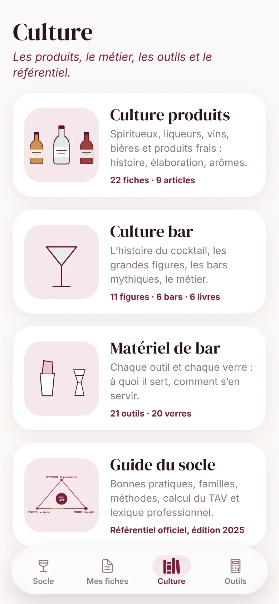
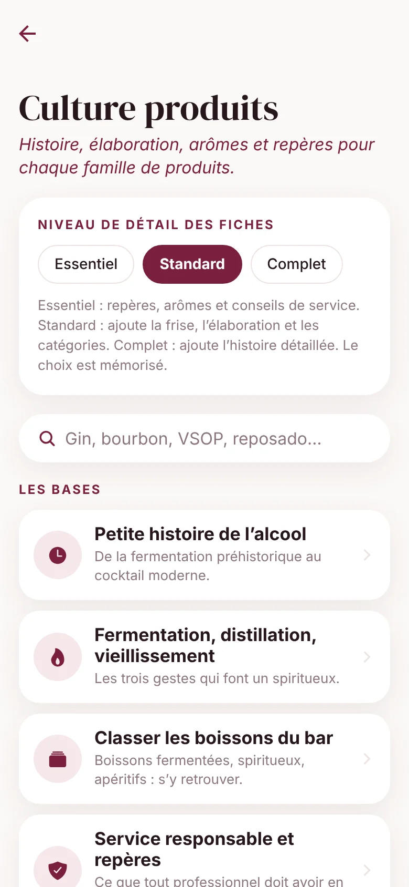
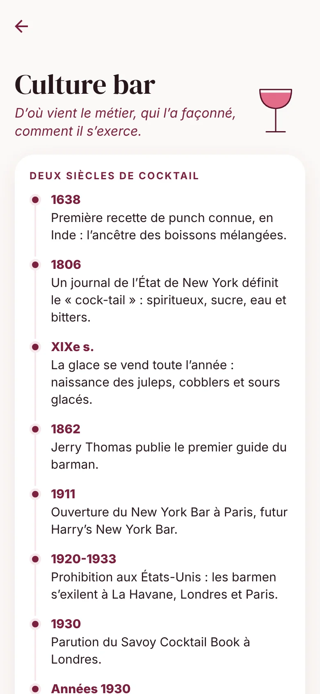
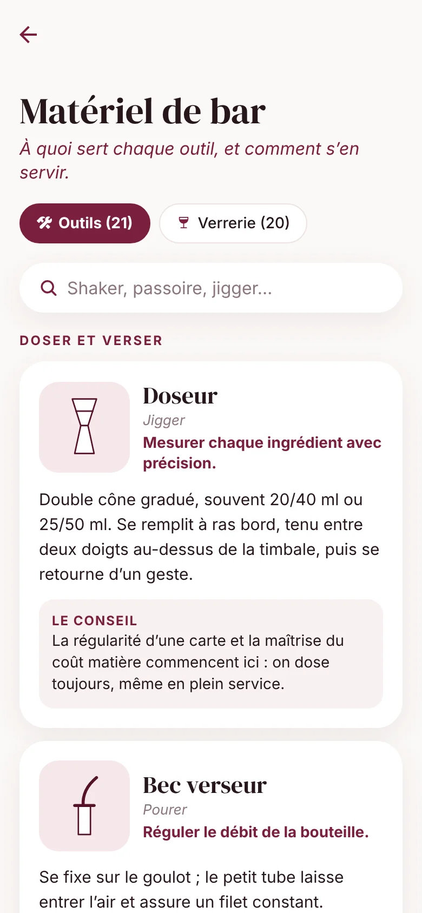
04 — Outils
Réviser, chiffrer, convertir.
Ma mercuriale
Saisissez vos prix d'achat une fois : ils alimentent toutes vos fiches.
Calculateurs
Coût d'une dose et prix de vente, selon le ratio matière que vous visez.
Convertisseur
ml, cl, oz : passez d'une unité à l'autre sans calcul de tête.
Batch
Les quantités d'une recette pour le nombre de verres à préparer.
Allergènes
Repérés automatiquement à partir des ingrédients de la fiche.
Export PDF
Vos fiches et la carte de votre bar, prêtes à imprimer ou à partager.
Téléphone & tablette
Dans la poche du tablier.
Ou posée derrière le bar.
Knowtail est conçue pour les téléphones comme pour les tablettes, sur iOS et Android. Vos fiches restent enregistrées sur l'appareil.
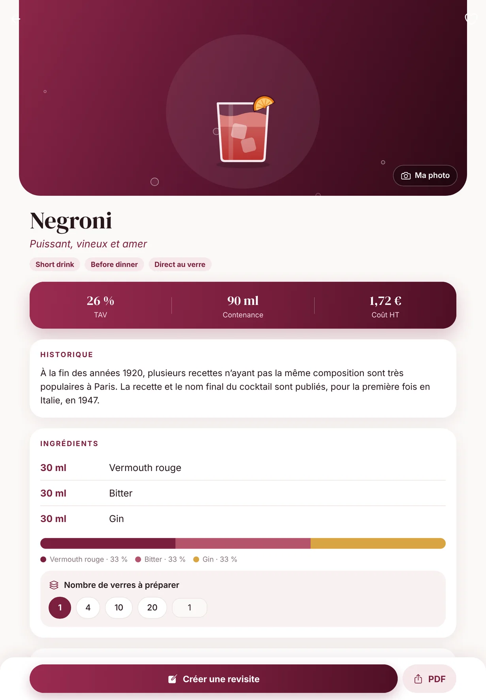
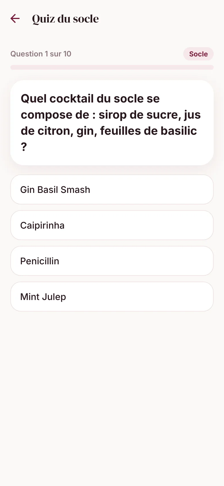
Pour les pros, par passion du métier
Derrière chaque bar, un usage.
Barmans & barmaids
Le bon dosage au bon moment, et une culture qui s'enrichit entre deux services.
Chefs de bar
Une carte formalisée et chiffrée : coût matière, prix de vente, même exécution d'un verre à l'autre.
En formation
Le référentiel officiel à réviser, et des quiz pour vérifier que tout est acquis.
Prêt à passer derrière le bar ?
Knowtail arrive sur iOS et Android, pour téléphones et tablettes.
Les liens de téléchargement seront activés ici dès la sortie.